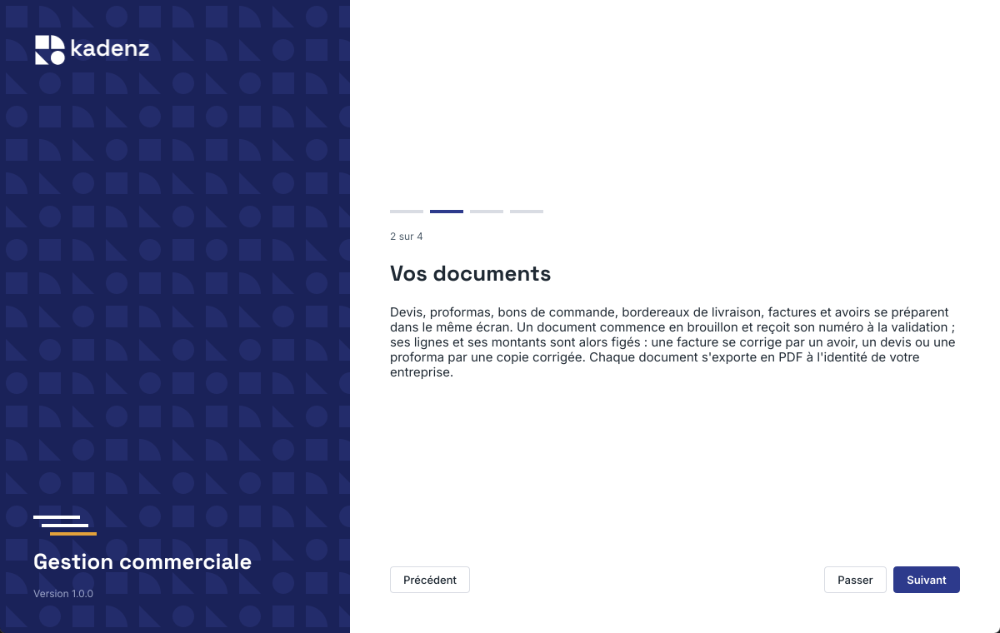
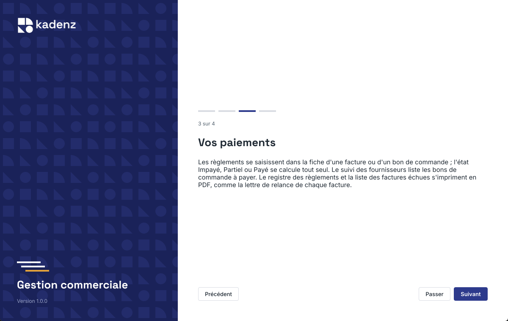
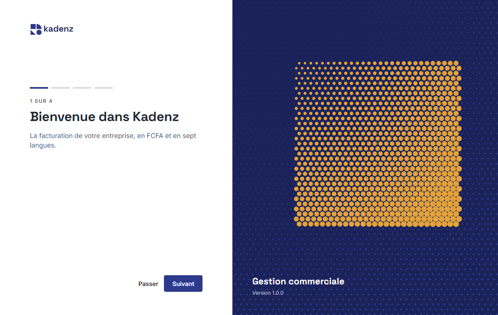
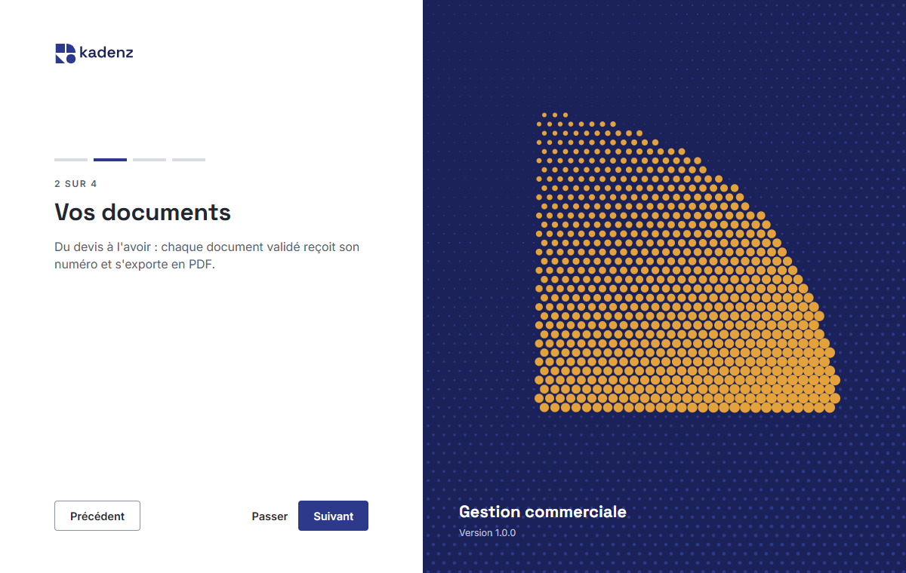
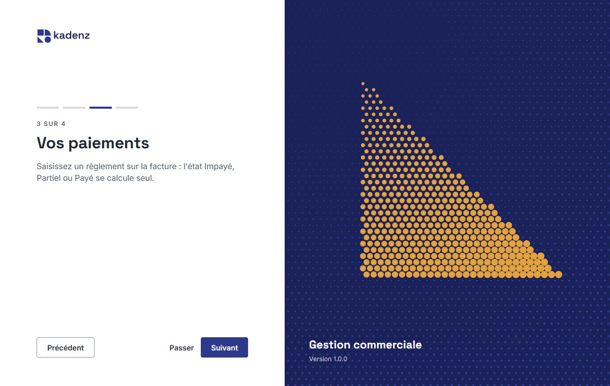
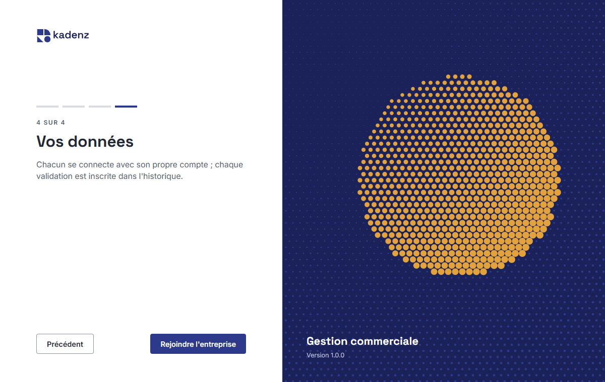
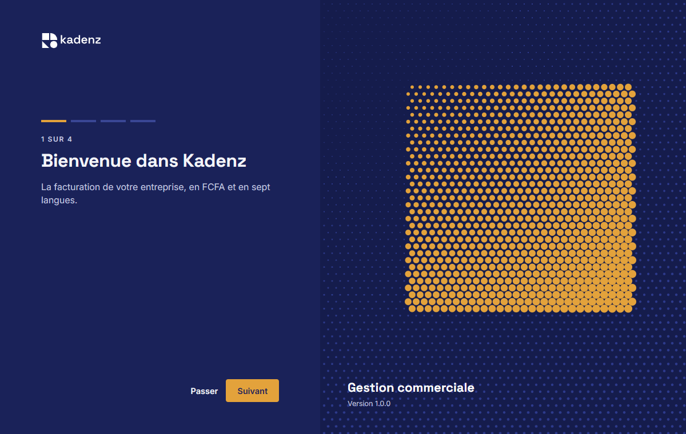
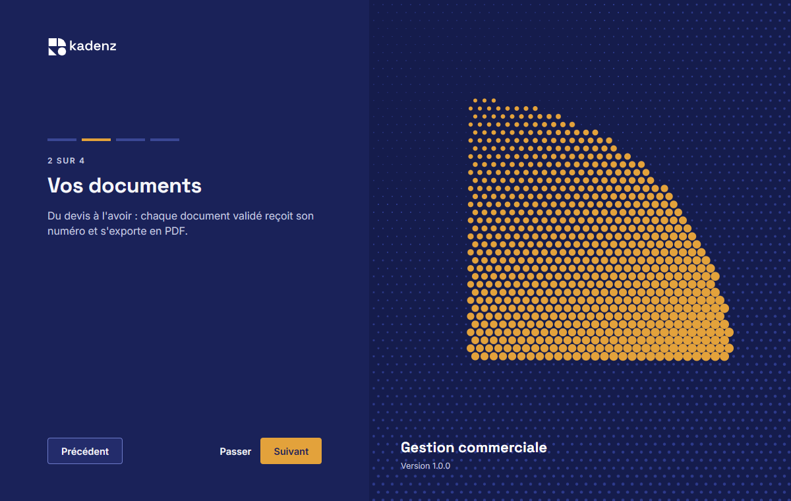
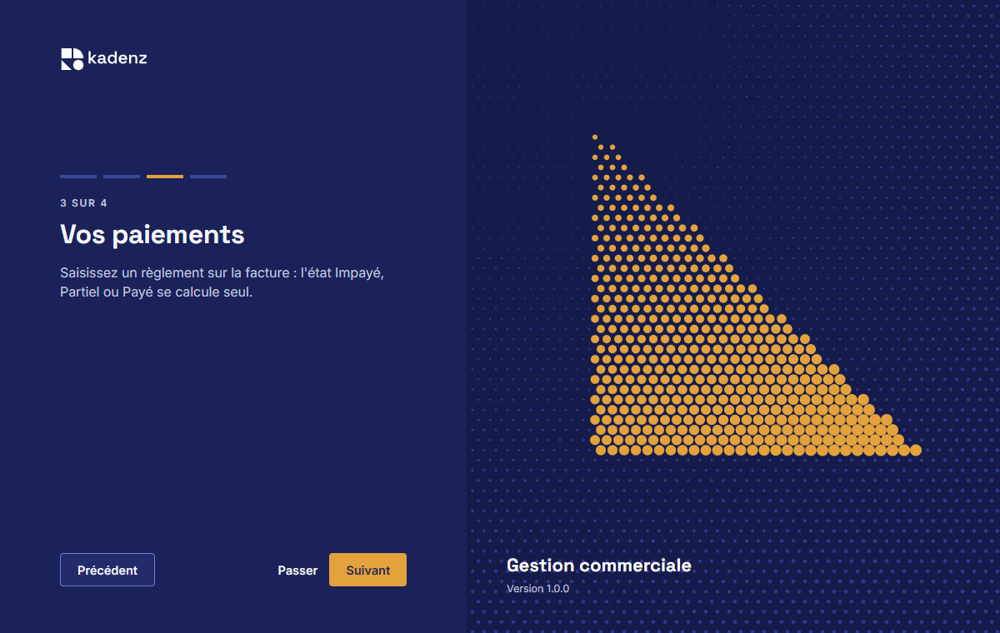
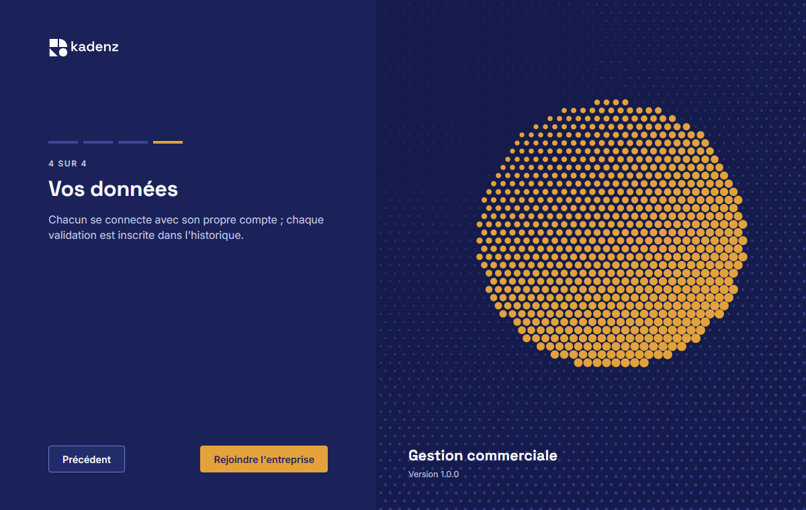

Présentation
Quatre écrans, une phrase chacun, bloc ancré en haut












- Bloc fixe, mesuré : Présentation proposée, 8 écrans : haut du bloc 210 px, bord gauche 72 px, largeur fixée à 416 px (actuel : haut de 252 à 270 px).
- Une pièce du symbole par page, au même endroit : carré, quart, triangle, disque.
- Les boutons restent à la même place sur les quatre pages.
- Dernier bouton : « Rejoindre l'entreprise », parce qu'en 1.0 le poste passe ensuite à l'inscription (main.rs). En monoposte, ce serait « Commencer l'installation » : à décider.
| Écran | Texte actuel | Texte proposé |
|---|---|---|
| Bienvenue dans Kadenz | Kadenz tient la facturation de votre entreprise sur ce poste : clients, fournisseurs, produits et documents commerciaux, montants en FCFA. L'interface existe en sept langues ; chaque compte choisit la sienne. (31 mots) | La facturation de votre entreprise, en FCFA et en sept langues. |
| Vos documents | Devis, proformas, bons de commande, bordereaux de livraison, factures et avoirs se préparent dans le même écran. Un document commence en brouillon et reçoit son numéro à la validation ; [...] Chaque document s'exporte en PDF à l'identité de votre entreprise. (65 mots) | Du devis à l'avoir : chaque document validé reçoit son numéro et s'exporte en PDF. |
| Vos paiements | Les règlements se saisissent dans la fiche d'une facture ou d'un bon de commande ; l'état Impayé, Partiel ou Payé se calcule tout seul. [...] (56 mots) | Saisissez un règlement sur la facture : l'état Impayé, Partiel ou Payé se calcule seul. |
| Vos données | Les données restent sur ce poste, dans une base locale. Chacun se connecte avec son propre compte ; [...] Validations, annulations et règlements sont inscrits dans l'historique de chaque document. (45 mots), puis « L'assistant qui suit crée votre entreprise et le compte administrateur. » | Chacun se connecte avec son propre compte ; chaque validation est inscrite dans l'historique. |